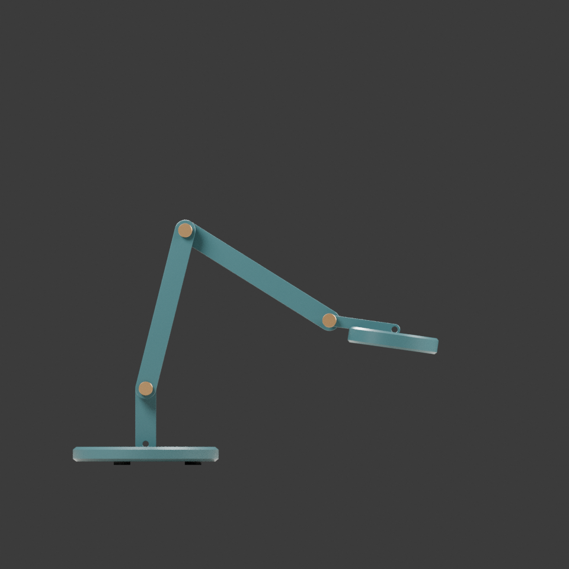
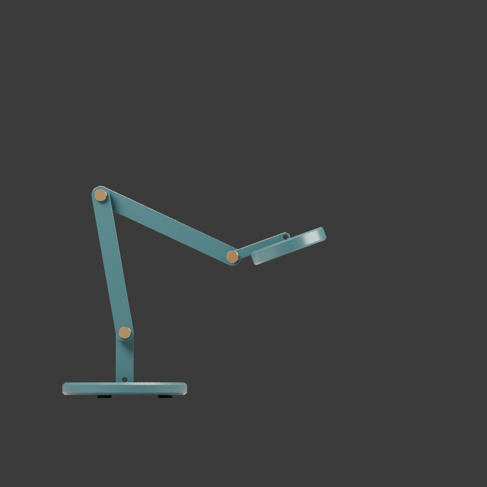
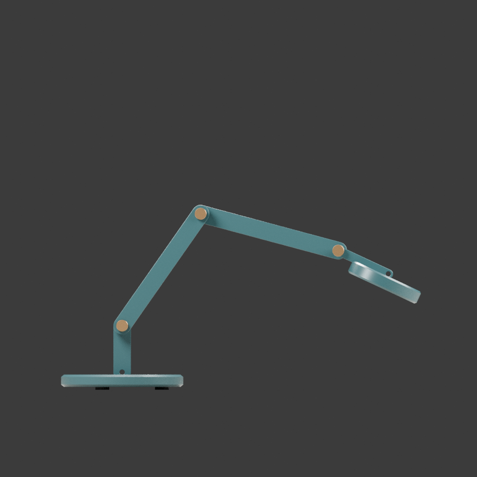
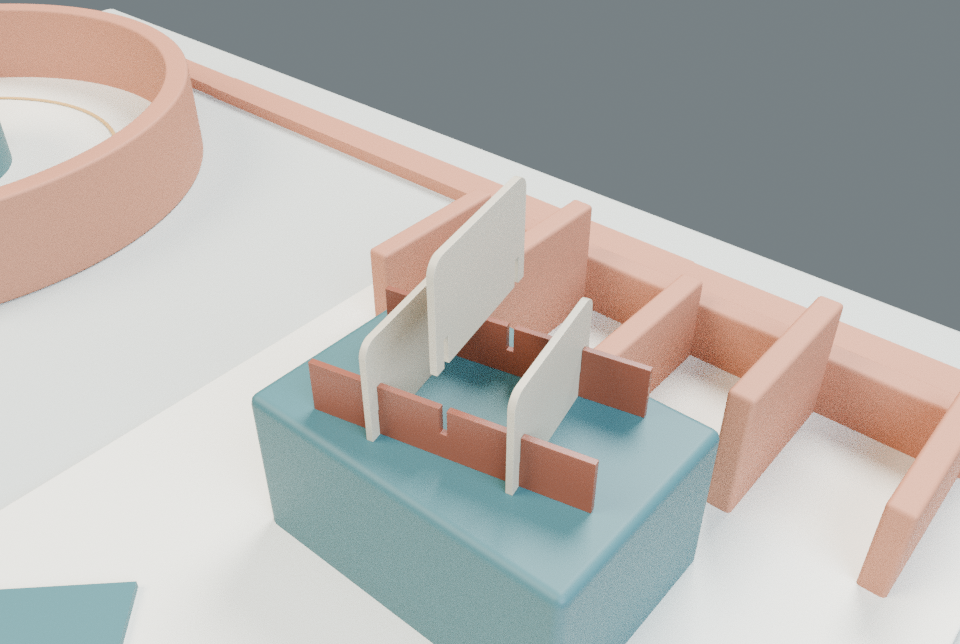
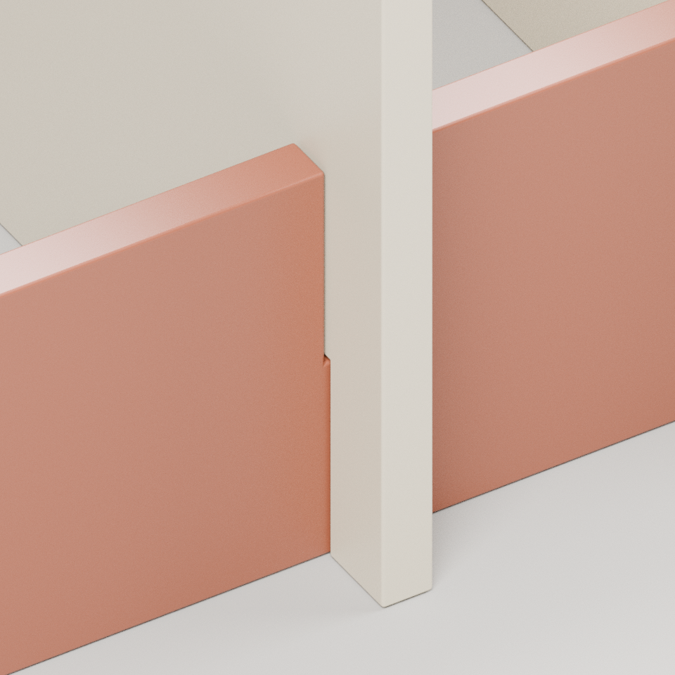

00 关系广场
在两种连接方式之间选择路径。圆庭围绕转动，梳齿廊沿插接展开。
拖动旋转 · 右键拖动平移 · 滚轮缩放
触屏：单指旋转，双指平移 / 缩放
方向键按当前镜头方向平移 · + / − 缩放
1 / 2 直达工位 · Home 回全景 · Esc 关闭
点选地面标记前往，点选模型开始观察任务。 “下一工位”带你找到尚未查看的连接，地图圆点是观察中心。
工位操作采用离散已测样本。没有连续装配动画，也不是制造模拟。
这是无需 JavaScript 或图形支持的备用目录；三维空间是本作品的主体验。

在两种连接方式之间选择路径。圆庭围绕转动，梳齿廊沿插接展开。
在转动庭点选灯体，比较初始、收拢、展开三个离散样本。同一底座上，灯臂与铰轴位置关系改变；不播放连续旋转，也不推断样本之间运动安全。
查看模型与介绍页在插接廊点选中间隔板，逐步查看0、12、24、48、80、120mm上提状态。两条轨与其他隔板固定，观察槽口如何限制侧移。演示上提态是悬置观察，不是稳定性证明。
查看模型与介绍页这里展示离线样本和操作结论，不把静态图冒充实时操作。





SD01 v0.3 新空间设计候选；实际体验与审美反馈待确认。GPU / 真机触屏未验。